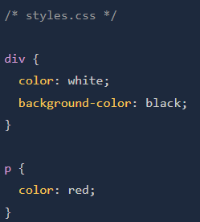

CSS is used to provide styling to a HTML document which basically turns the webpage from boring text
to something more unique, colourful and all round visually pleasing to view.
CSS is constructed with various rules within its syntax. At its basic level each of these rules are made up with a 'Selector',
a semicolon seperated list of 'Declarations' with each declaration being made up from a 'Property' combined with its 'Value' as a pair.
Example in image below:
div elements are HTML's most basic element. 'Divs' are just empty containers! These empty containers are very useful in CSS to put other elements into for styling.
This wont make sense at the moment but while progressing through CSS it will become more apparent why they are useful even though technically should be last resort
after the original elements like the heading tags or paragraph tags ect. This is just called practicing 'Semantic HTML'.
Selectors are what CSS rules refer to when selecting html elements to style. There are many different selectors to choose from but the below are the most common.
Universal Selectors are used to select every type of element (Basically the whole document). The syntax to use this selector is an astrix ('*')
In the example below, every element will have the color 'Purple' applied to it.
The type selector is used to select every element of the same type, also known as an element selector.
If i had three 'div' elements and one paragraph and i used the type selector to select the divs, All the div elements with inherit the styling being made
but the paragraph will stay a its default setting unless styled in the future code.
In the example below all div elements will have the colour of white, while the paragraph will stay as default (Which is actually white lol)
Class selectors are where we can start individualising specific elements. A class is an attribute which the user gives to a html element.
This class isnt just restricted to the one element though, it can be added to multiple DIFFERENT elements at the same time.
An example of creating a class is below:
The class attribute is included inside the opening tag of the html element in this case a 'div' The name of the class is put inside double quotes and this is what is referenced in the CSS styling.
Classes are case sensitive and are summoned using a period '.' before the class name like the example below.
In the example, any elements the user has given an 'alert-text' class to will change to the colour red.
Classes can NOT start with a number, so '4lert-text' wouldnt work. Also you can have multiple classes attached to one element seperated with whitespace like 'class= "alert-text severe-alert"'
Because of this, you can not use white space in a single class name as it will think your declaring two classes instead.
ID selectors are very similar to the class selectors. They both work the same, as in they both go into the opening tags of an element as an attribute, but with the ID selectors, they can only be used once
This selector can not be repeated on a single page more. Also has the same rules of no whitespace, and no numbers at the start of its name. Calling an ID is started with the hashtag ('#') this time, not a period.
Example of the ID selector is below:
If we have two selectors sharing the same style declarations, it is possible to group them together to avoid writing the same declarations out twice.
Doing this doesn't negate the ability to add their own unique declarations later in the code. So if an element with the class of 'read' has a background colour of black and text colour of white.
Then an element with the class of 'unread' has the same, we can just group these together and type the declarations only once.
Example below:
The syntax to use this grouping method is to declare the first selector as normal (.read) then seperate the next selector with a comma before declaring the second.(.read, .unread)
As seen in the image above, after declaring the colour and background colour in the grouped declaration, you can still provide seperate unique declarations after, using the methods above.
There are three way to add CSS to HTML. External, Internal and Inline.
External CSS stylesheets are the most common and are seperate files to the HTML document. These files (Stylesheets) link to the HTML document within the 'Head' tags using a 'Link' void element.
In the above example we have declared a 'Link' element inbetween the 'head' tags. The 'rel' attribute is neccessary and determines the relationship between the css and html documents (Which its a 'stylesheet' for the HTML).
The 'href' attribute is the location of the stylesheet on the local computer. In the above example the stylesheet.css is located in the same directory so no path is required. This is the same as locating and image file.
The name of the stylesheet can be what ever the user deems fit for the project. As long as the stylesheet ends with '.CSS' It could just as easy be called random.css instead of stylesheet.css
Once the stylesheet has been created and linked, you can open the stylesheet and start styling your HTML elements. Example of the css structure is below.

Opening the stylesheet just opens a blank page. we can start calling selectors like the 'div' in the above example then open the declaration block with a curly brace following the space after the selector
Inside the declaration block we can declare properties like background-color and give its value of black before closing the block again with another curly brace. The indentation is usually automatic when using vscode.
When can just keep on listing different selectors one ontop of each other following the same format each time.
Internal styling is near enough the same as external styling but instead of typing the css code on a seperate stylesheet and then linking this to the html document, you just add the CSS to the html document directly
using the 'style' element which is placed between the 'head' opening and closing tags. This is ok if your only making a single web page but can get messy and hard to read the more complicated the website gets.
Example of Internal styling below:
Inline styling isnt usually recommended unless being used for a unique styling for a single element. Inline is added to the elements opening tag directly using the 'Style= attribute' and its properties/values are held within double quotes.
As this method is directly inside the element itself, we dont need to use a selector. Its good to note that this method overwrites both other methods which can cause problems or be very helpful.
Example below: